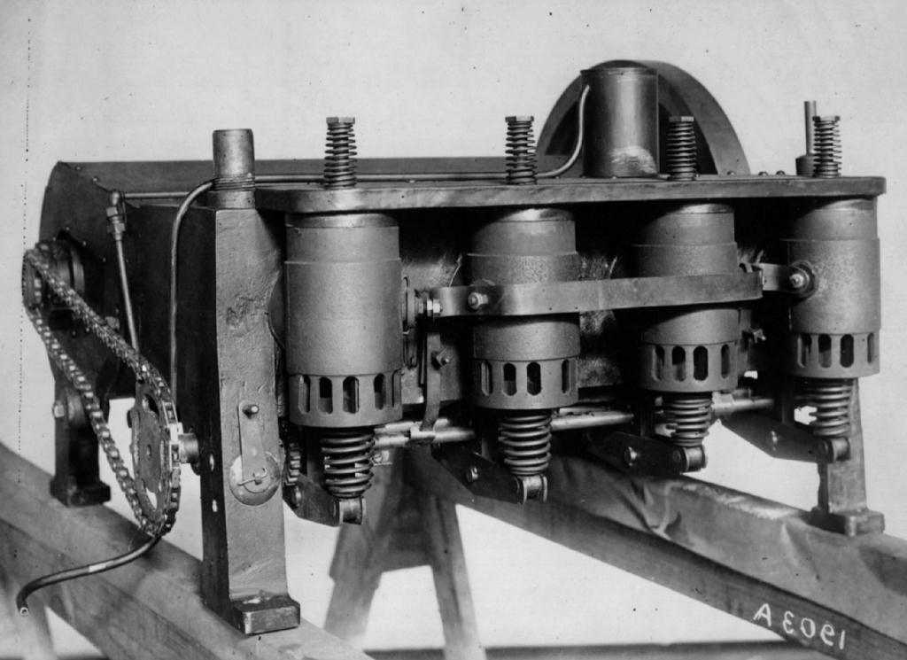
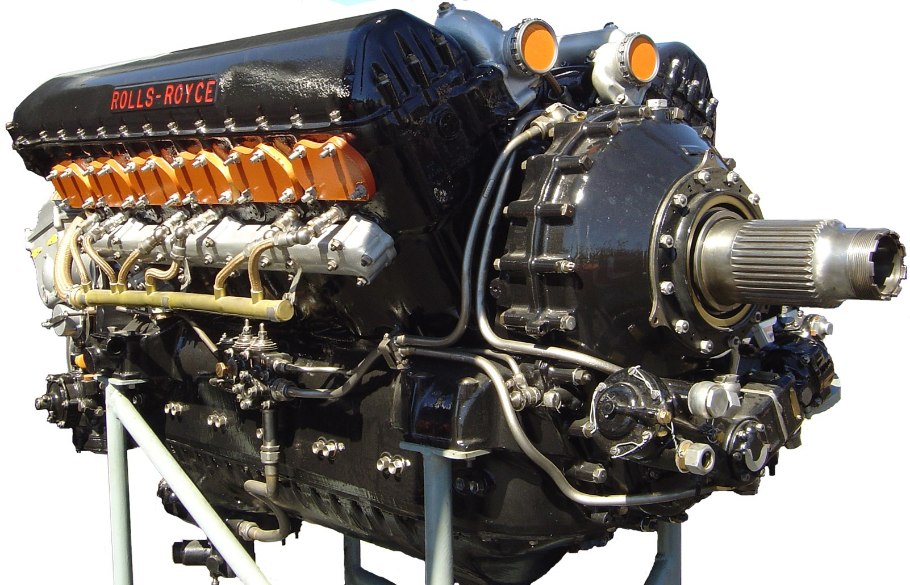
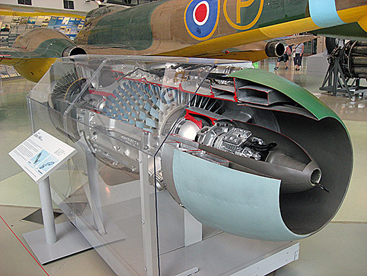
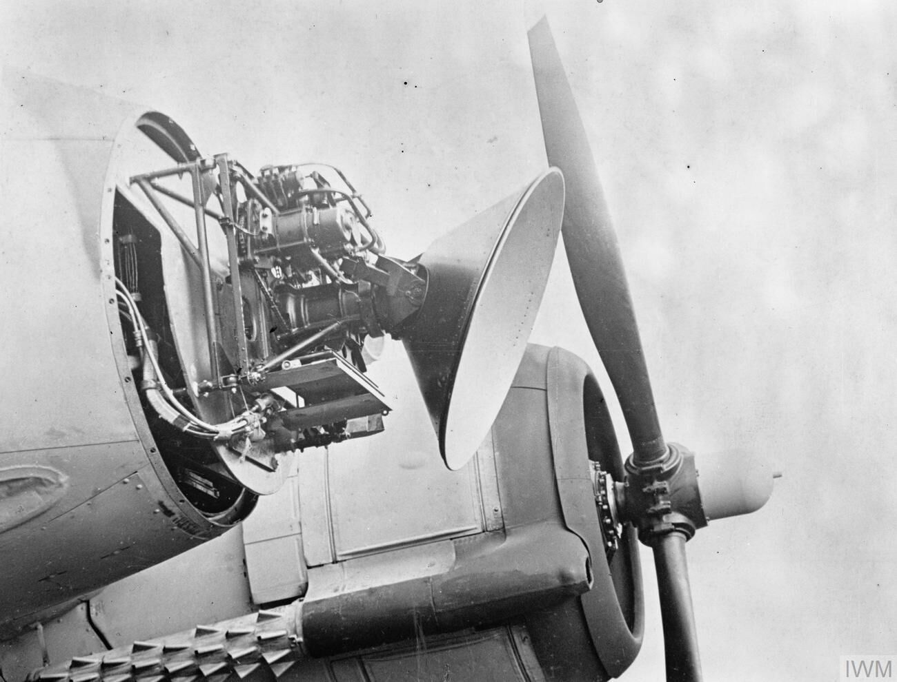
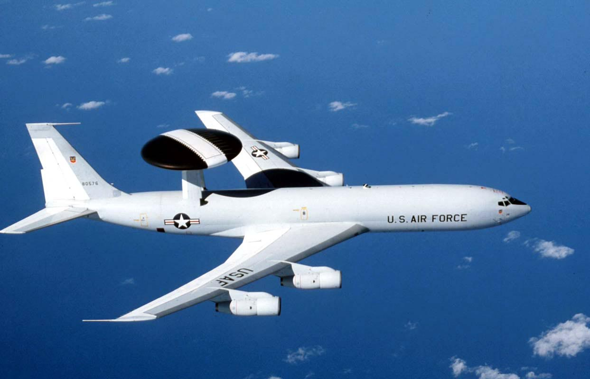
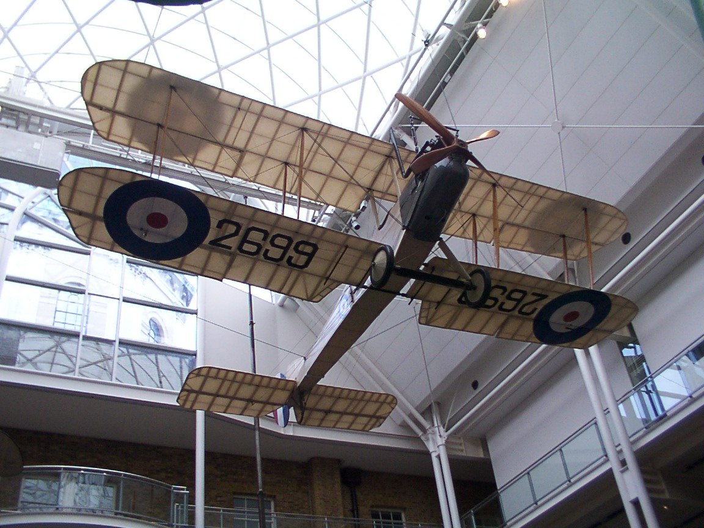
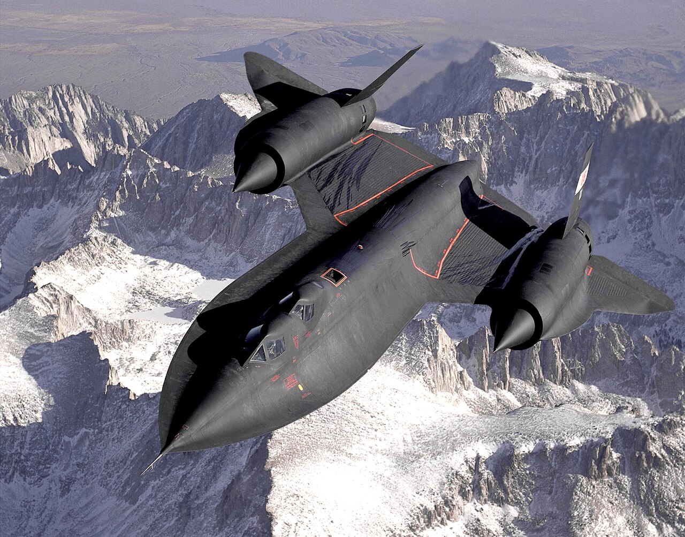
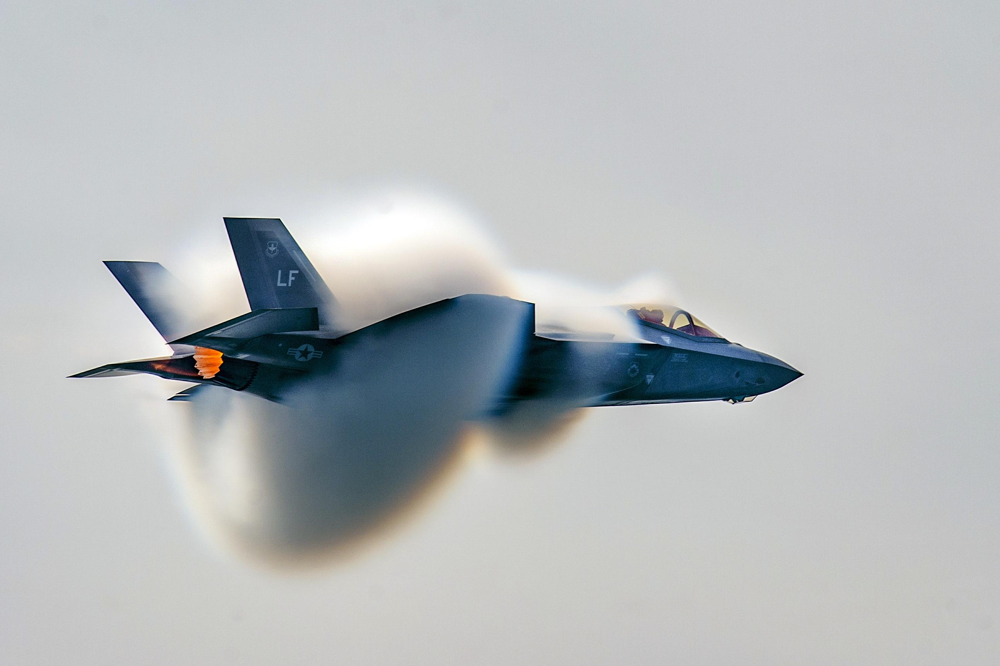

Panel Analizy Technologicznej
Systemowe zestawienie ewolucji kluczowych komponentów lotniczych.

Napęd Tłokowy
Wright Flyer (12 KM). Początek ery silników spalinowych napędzających drewniane śmigła.

Apogeum Tłokowe
Supermarine Spitfire (ponad 1000 KM). Granica możliwości technologii śmigłowej (ok. 650 km/h).

Era Odrzutowa
Me 262 i silniki turboodrzutowe. Przełamanie barier prędkości, otwarcie drogi do lotów naddźwiękowych.

Wczesny Radar
Brytyjski system Chain Home. Wielkie, stacjonarne wieże wykrywające nadlatujące wyprawy bombowe.

Radary Pokładowe
Narodziny nocnego lotnictwa. Miniaturyzacja pozwoliła na montaż radaru w nosach myśliwców, uniezależniając pilotów od naprowadzania z ziemi.

Systemy AWACS
Latające centra dowodzenia. Miniaturyzacja radaru i umieszczenie go na grzbiecie samolotu w celu skanowania setek kilometrów.

Konstrukcje Płócienne
Drewniane kratownice naciągnięte płótnem. Lekkie, ale skrajnie podatne na uszkodzenia i ogień.

Pancerz Tytanowy
SR-71 Blackbird. Pierwsze masowe użycie stopów tytanu, by konstrukcja nie stopiła się od tarcia powietrza przy prędkości Mach 3.

Technologia Stealth
F-117 i F-35. Geometria odbijająca fale radarowe oraz powłoki RAM pochłaniające promieniowanie radaru.